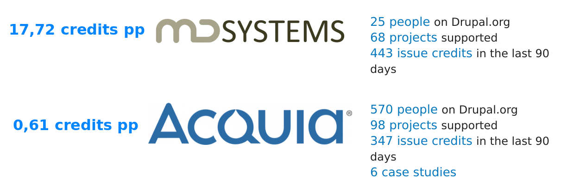
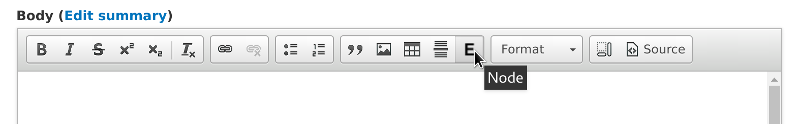
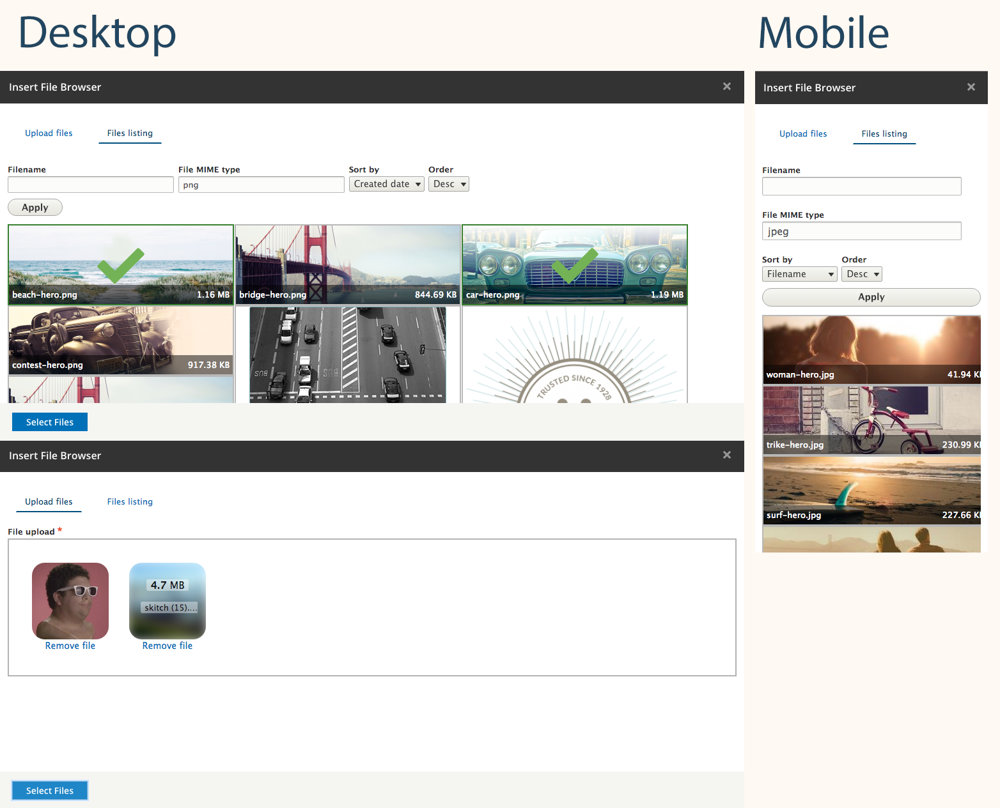

The next generation embedding with Entity embed
Janez Urevc (@slashrsm)
- senior engineer and team lead at MD Systems
- Active member of Drupal community since 2009
- Lead of the D8 media initiative
- ex Examiner.com
Biggest company contributor
Source: drupal.org/drupal-services


I am always happy to help!
Contents of the session
- What we learned from Drupal 7?
- What we have in Drupal 8 core?
- Idea behind Entity embed
- Architecture and patterns
- Configuration
- Entity browser integration
- Roadmap
Drupal 7
- Lots of WWYSIWYG editors
- Each module implements embedding from scratch
- There is no perfect implementation
What is in Drupal 8
CKEditor + Basic image upload
Pros
- Way better than D7
- Ability to align
- Ability to add captions
- File usage tracking
- Leads the way for D8
Cons
- Can only embed self-hosted images
- No way to embed 3rd party images
- No way to embed other rich media
- No way to embed non-media
- Little control over display
Anyone ever seen something like this?

Source: www.theguardian.com
Or this? Anyone?
Source: www.nytimes.com
Entity embed
- drupal.org/project/entity_embed
- Officially born at NYC Camp 2 years ago
- Build on top of core's approach (uses same principles)
- Embed anything
- YouTube video (Media entity)
Entity embed (cont'd)
- Self-hosted video (Media or File entity)
- Related article (Node)
- List of related articles (Taxonomy)
- Related product (Commerce product)
- Discussion thread (Comment)
- You name it ....
Architeture
3 levels:
- WYSIWYG integration
- storage
- display
Architecture: WYSIWYG
Architecture: WYSIWYG
Works through Embed module
Architecture: storage
Custom HTML tag
Architecture: display
Text filters
Displaying of entities
We are re-using Entity reference field formatters.
Display: rendered entity
Display: field formatters
DEMO
Entity browser integration
drupal.org/project/entity_browserEntity browser integration
Entity browser is powerful but complex tool. Best to initially try it with File entity browser module.
It can make Entity embed's selection part way nicer.
File entity browser
 drupal.org/project/file_browserDEMO
Roadmap
beta release hopefully this week (1 beta blocker - almost there)
You can already use it!
Get involved!
drupal.org/project/entity_embed
github.com/drupal-media/entity_embed
#drupal-media @ Freenode.net
There is more!
URL Embed
Status: Basic functionality
Allows embedding of URLs using the WYSIWYG or link fields.